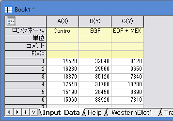
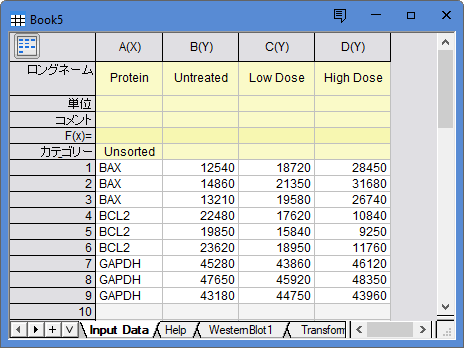
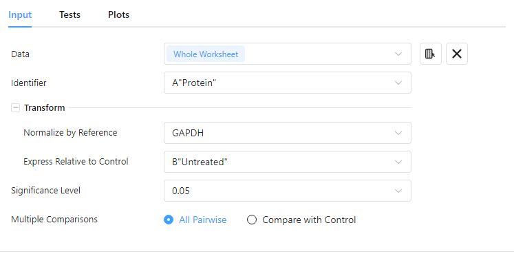
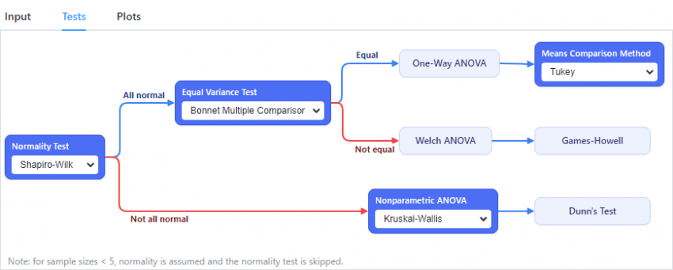
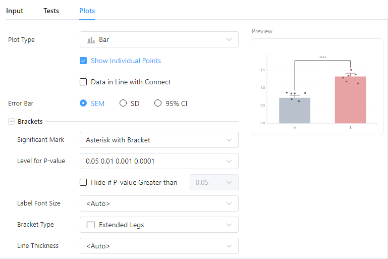

ウェスタンブロット
Western-Blot
サポート情報
ウェスタンブロットアッセイを分析する
- テンプレートを使用
- メニューのヘルプ: スタートアップダイアログを選択し、スタートアップダイアログを開きます。
- ラボアッセイタブに行き、ウェスタンブロットブランチを広げ、希望するデータ構造を選択します。テンプレートが案内とともに開きます。
- 自身のワークシートを使用
- ワークシートにデータを入力します。
- メニューから統計：ラボアッセイ：ウェスタンブロットを選択し、分析ダイアログを開きます。
ウェスタンブロットのデータ構造
生のバンド強度のウェスタンブロット

分析対象となる、各処理条件のターゲットバンド強度値を指定します。
- 各列は、Control、TreatmentA、TreatmentBなどの1つの実験グループを表します。
- 各行は、独立した1つの生物学的反復を表します。通常、少なくとも3つの反復が必要です。テクニカルレプリケートを測定した場合は、ここに入力する前に平均値を計算するなどして、生物学的サンプルごとに1つの値にまとめてください。
- このワークフローでは、値がすでに参照タンパク質に対して正規化されているかどうかは確認されません。参照タンパク質による正規化が必要な場合は、インポート前に正規化するか、「参照/総タンパク質」ワークフローを使用してください。
- すべての列には数値を入力する必要があります。テキスト、空白セル、負のグレー値は欠損値として扱われ、解析から除外されます。
参照/総タンパク質のウェスタンブロット

解析対象となるタンパク質の種類と、それぞれのバンド強度値を指定します。すべてのターゲットタンパク質と参照タンパク質は、1つの列に縦方向にまとめて配置します。
- テキスト列「Protein」には、GAPDH、ACTB、BAX、BCL2など、異なるタンパク質の種類を示すラベルを入力します。各ターゲットタンパク質の反復測定値は、同じ実験グループ内の参照タンパク質の反復測定値と、行ごとに対応している必要があります。ターゲットタンパク質と参照タンパク質の行の順序は、すべてのグループ列で統一する必要があります。例えば、1～3行目がBAXの反復測定値、4～6行目がBCL2、7～9行目がGAPDHの場合、各グループのターゲットタンパク質の1番目の反復測定値は、GAPDHの1番目の反復測定値と対応させ、以降も同様に対応させます。
- 「Protein」列以外のすべての数値列には、Control、TreatmentA、TreatmentBなど、異なる実験グループにおけるターゲットタンパク質と参照タンパク質のバンド強度値を入力します。
- 各行は、独立した1つの生物学的反復を表します。通常、少なくとも3つの反復が必要です。テクニカルレプリケートを測定した場合は、ここに入力する前に平均値を計算するなどして、生物学的サンプルごとに1つの値にまとめてください。
ウェスタンブロットダイアログボックス
入力

| 入力
|
分析対象となるバンド強度値
|
| 識別子
|
「参照/総タンパク質」ワークフローでは、各行がターゲットタンパク質か参照タンパク質かを識別する「Protein」列を選択します。
|
| 変換
|
変換は、統計検定の実行前に適用されます。
- 「参照/総タンパク質」ワークフローで使用可能です。GAPDH、ACTB、TUBA1A、TUBBなど、安定したローディングコントロールとなる参照タンパク質を選択します。
- 以下によりターゲットタンパク質を正規化します。
- 同じ実験グループ列内の

- 対照グループを基準として用います。対照グループの平均値が1（100%）になるように値を再スケーリングし、処理グループの値を対照グループに対するfold changeとして表します。この変換によって生物学的変動が除去されるわけではなく、結果を解釈しやすくするためにグループの平均値を再スケーリングするだけです。
|
| 有意水準
|
統計的有意性を判定するためのしきい値を設定します。
|
| 多重比較
|
比較対象のセットを選択します。
- 対照グループと処理グループを相互に比較します。正規性と等分散性の仮定に応じて、「検定」タブで適切な事後比較法（Tukey法、Games-Howell法、Dunn検定）を選択してください。
- 各処理グループは、対照グループとのみ比較します。これにより検定の回数が少なくなり、多数の処理グループをスクリーニングする際に、より高い検出力が得られる可能性があります。「検定」タブでは、通常、Dunnett検定が適切な事後比較法となります。
|
検定

Step 1: 正規性の検定
各グループのデータが正規分布に従うかどうかを検証します。反復数が5未満の場合は、正規性を仮定し、この検定をスキップします。
Step 2: 等分散検定 (パラメトリックブランチのみ)
すべてのグループが正規分布に従う場合は、等分散性検定を実行し、すべてのグループの分散が等しいかどうかを検証します。アルゴリズムについては、こちらを参照してください。
- Bonett多重比較
- Brown-Forsythe：非正規性（特に標本サイズが5未満の場合）や外れ値に対して頑健であるため、少ない標本の場合の安全なデフォルトとして推奨されます。
- Levene | |
- Levene ()2
- Bartlett：正規性が十分に確認されている場合に適していますが、標本サイズが小さい場合やノイズの多いデータでは頑健性が低くなります。
- すべてのグループの分散が等しい場合は、一元配置ANOVAと平均比較を実行します。
- 分散が等しくない場合は、WelchのANOVAとGames-Howellを実行します。
Step 3: ノンパラメトリック ブランチ
1つ以上のグループが正規分布に従わない場合は、ノンパラメトリックANOVAとDunn検定を実行します。
プロット

多重比較プロットの見た目を設定します。変更内容はすべて、右側のライブプレビューパネルに即座に反映されます。